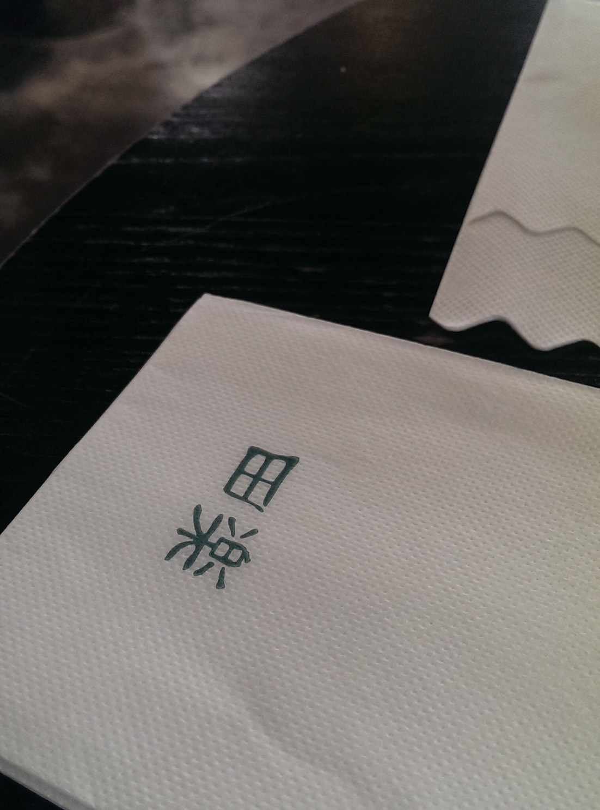
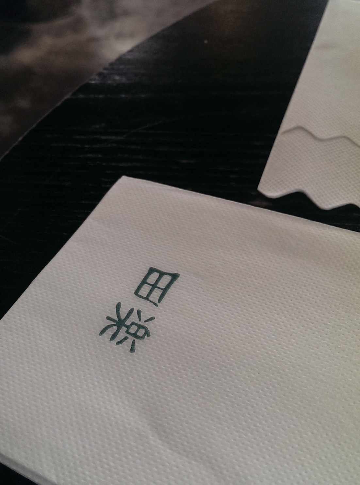

|  |  |
官網介紹:◎公司簡介 田樂漢堡於2011年6月正式開業 ◎經營理念 為什麼是for Farm？中文名叫做【田楽】 在我們的餐桌上，每一株野菜、每一丁水果塊、 每一葉茶來自於大地農田，我們順應時節，將大地的自然物產， 真實地分享予每一個人，所以取名為 for Farm，為了這片土地， 也為了辛苦耕作的小農，期待能盡點微小的力量。 for Farm 也等於 for fun（樂趣）， 這意謂著我們正在享受實踐，並且樂在其中 田樂內聚集了年輕活力並充滿熱情的能量 希望志同道合的夥伴加入一起樂在工作
|  | |